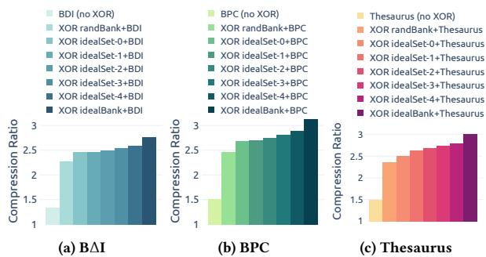
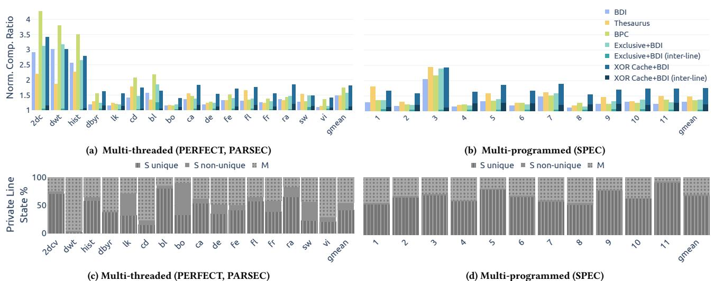
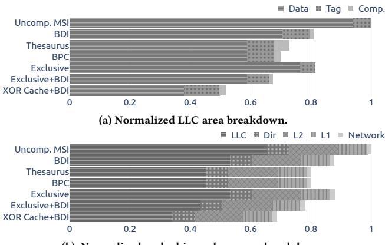
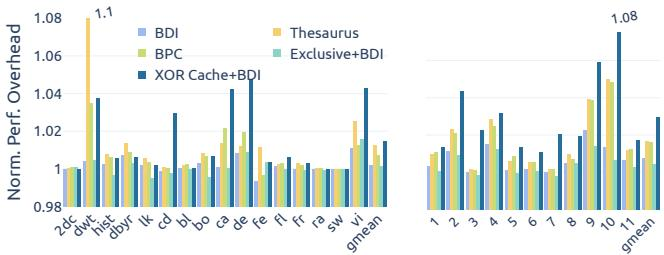
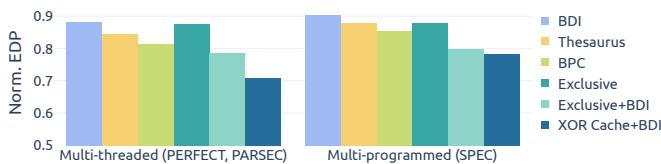
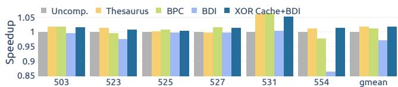
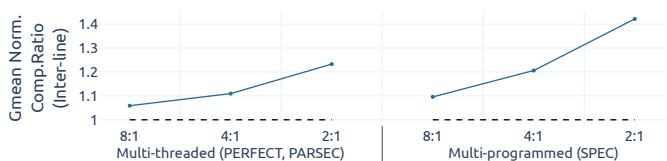

The XOR Cache: A Catalyst for Compression 论文解析#
0. 论文基本信息#
作者 (Authors): Zhewen Pan, Joshua San Miguel
发表期刊/会议 (Journal/Conference): ISCA
发表年份 (Publication Year): 2025
研究机构 (Affiliations): University of Wisconsin-Madison
1. 摘要#
目的
- 提出一种新的 LLC 压缩架构 XOR Cache，利用 inclusion 与 private caching 带来的跨层冗余，将原本重复存储的 cache lines 通过 bitwise XOR 合并存放。
- 同时提升两类收益：
- 通过 inter-line compression 将两条 line 合并到一个物理槽位，直接减少 LLC 数据阵列占用。
- 通过 intra-line compression 降低 XOR 后数据的熵，增强与 BΔI、BPC、Thesaurus 等压缩方案的协同效果。
- 目标是在维持性能的前提下，降低 LLC area、power 和整体 energy-delay product (EDP)。
方法
- 采用 decoupled tag-data organization，并引入 map table 选择可 XOR 的候选 line。
- 设计两阶段压缩思路：
- 先对两条 line 做 XOR，形成可逆的压缩表示。
- 再对 XOR 结果应用现有压缩算法，挖掘额外的 structured sparsity。
- 设计 XOR policy 以平衡效果与开销：
- randBank：随机选择同 bank 候选。
- idealSet / idealBank：搜索更相似的 line，以最大化压缩收益。
- 实现上采用基于 LSH-RP、LSH-BS、BL、SBL 的 map function，其中 SBL 在实验中表现最佳。
- 为保证数据可恢复与一致性，重新设计 MSI 基础上的 coherence protocol：
- 支持 decompression、unXORing、cache-to-cache forwarding。
- 通过 minimum sharer invariant 保证至少一条原始 line 可恢复。
- 采用显式 eviction / upgrade notification，避免 recoverability 失效。
- 在 gem5 Ruby 中实现并评估，系统配置为：
- 4-core x86-64，3GHz
- 3-level cache hierarchy
- 32nm technology
- 负载覆盖 PERFECT、PARSEC 3.0、SPEC CPU 2017
- 对比基线包括：
- Uncompressed MSI
- BΔI
- BPC
- Thesaurus
- Exclusive / Exclusive+BΔI
结果
| 指标 | 结果 |
|---|---|
| LLC area | 1.93× smaller |
| LLC power | 1.92× reduction |
| 性能开销 | 2.06% |
| EDP | 26.3% lower |
| 与 Exclusive+BΔI 相比的压缩收益 | 更高 |
| 与 BΔI / BPC / Thesaurus 相比的平均压缩率 | 更优 |
- 在压缩率上，XOR Cache+BΔI 能稳定提升基线 BΔI 的压缩效果，并在多类 workload 上优于 Thesaurus 与 BPC。
- 在候选选择策略上：
- idealBank 的压缩收益最高，说明 value similarity 对 XOR 协同压缩至关重要。
- 实用化的 SBL 在覆盖率与准确率之间取得较好平衡，7-bit 设置是综合最优点。
- 在性能上：
- 多线程负载平均开销约 1.45%。
- 多程序负载平均开销约 2.95%。
- 总体几何平均为 2.06%。
- 在系统级收益上：
- cache hierarchy power 降低明显。
- 在 iso-storage 条件下，XOR Cache 仍能带来轻微加速，优于其他 compressed cache 方案。
- 综合评估显示，XOR Cache 通过同时利用 inter-line 与 intra-line 压缩，实现了更高压缩率与更低硬件成本。
结论
- XOR Cache 证明了：LLC 中由 inclusion 与 private caching 产生的冗余并非纯粹负担，也可以转化为可利用的压缩机会。
- 其核心价值在于：
- 用 XOR 实现可逆的跨行压缩；
- 用候选选择机制增强与传统压缩器的协同；
- 用完整的 coherence protocol 保证正确性与可恢复性。
- 该设计在保持较低性能损失的同时，显著降低 area、power 和 EDP，说明 XOR Cache 是一种具有实际落地潜力的 LLC 压缩架构。
2. 背景知识与核心贡献#
研究背景
- 现代处理器在 LLC（last-level cache） 上投入大量 SRAM 面积 和 功耗，但大缓存并不总能带来线性性能收益，反而增加访问延迟与能耗。
- 现有 cache compression 主要利用单个 cache line 内部的冗余，较少利用 cache 层级之间的冗余。
- 现代 cache hierarchy 常见 inclusive 或 NINE 设计，会让 LLC 中保留大量与私有缓存重复的数据，造成 有效容量下降。
- 论文抓住了两个长期被低估的冗余来源：
- inclusion redundancy：LLC 与 private caches 之间的重复数据。
- private caching redundancy：多个私有缓存之间通过 coherence 形成的可恢复关系。
研究动机
- 现有压缩方法存在两个不足：
- 只关注 intra-line compression，没有系统利用跨层级的重复数据。
- 即便存在 inter-line compression，也往往只做“相似 line 合并”，没有把这种冗余转化为进一步压缩的催化剂。
- 作者希望把“冗余”从缺点转化为优势，提出一种能同时实现：
- inter-line compression：把两条 line 通过 XOR 合并到一个物理槽位中；
- intra-line synergy：让 XOR 后的数据更稀疏、更低熵，从而更容易被 BΔI、BPC、Thesaurus 等继续压缩。
- 目标不是单纯追求最高压缩率，而是在保持较低性能开销的前提下，显著降低 LLC area、power 和 energy-delay product (EDP)。
核心贡献
- 提出 XOR Cache：
- 通过对两条 cache line 做 bitwise XOR，把两条线的存储压缩到一个槽位中。
- 这一机制把原本的跨层级冗余变成可利用的压缩空间。
- 提出两类压缩收益：
- Inter-line compression：XOR 直接实现近似 2:1 的 line 级压缩。
- Intra-line compression synergy：若选择值相近的 line 做 XOR，可降低结果熵，提升其他压缩方案的效果。
- 设计了 XOR policy：
- 分析了随机选择、按 set 搜索、按 bank 搜索等策略。
- 引入基于 map table 的实用候选选择机制，在复杂度和压缩收益之间取得平衡。
- 设计了完整的 coherence protocol：
- 支持 XOR 后的 decompression、forwarding 和 unXORing。
- 通过 minimum sharer invariant 保证恢复性。
- 证明协议 deadlock-free，且不需要额外 virtual network。
- 给出可落地的硬件实现：
- 采用 decoupled tag-data organization 和 map table。
- 兼容与其他压缩技术联用，尤其是 BΔI。
- 通过 gem5 + CACTI + 32nm 综合评估验证效果：
- LLC area 降低 1.93×
- LLC power 降低 1.92×
- 平均性能开销仅 2.06%
- EDP 降低 26.3%
一句话概括
- 这篇论文的核心思想是：把 LLC 与 private caches 之间原本造成浪费的重复数据，用 XOR 重新编码成更紧凑、更易压缩的数据形态，从而同时获得 更小面积、更低功耗 和 可接受的性能损失。
3. 核心技术和实现细节#
0. 技术架构概览#
整体架构
- XOR Cache 是一个面向 LLC 的压缩缓存架构，核心思路是把两条 cache line 做 bitwise XOR 后共同存入一个物理槽位，从而实现 2:1 inter-line compression。
- 它不是只做单线内部压缩，而是把传统缓存中的“冗余”变成压缩机会，主要利用两类来源：
- inclusion redundancy：LLC 中和 private caches 中重复出现的 line
- private caching redundancy：不同 private caches 之间通过 coherence 可恢复的数据共享关系
- 架构上，它采用 decoupled tag-data organization，并引入一个小型 map table 来寻找可 XOR 的候选 line。
- 在压缩后，XOR Cache 还可以把 XOR 结果交给传统 intra-line compression（如 BΔI、BPC、Thesaurus）继续压缩，形成“inter-line + intra-line”的叠加收益。
- 整体设计建立在 mixed inclusive LLC 和 MSI coherence 基础上，通过额外的协议机制保证数据可恢复、可一致、无死锁。
 Figure 1: High-level overview. Unlike a conventional cache, XOR Cache stores the bitwise XOR of line pairs.
Figure 1: High-level overview. Unlike a conventional cache, XOR Cache stores the bitwise XOR of line pairs.核心组成模块
| 模块 | 作用 |
|---|---|
| Tag array | 存放 tag、XORed 标志、XORptr、DataPtr |
| Data array | 存放实际数据；若为 XOR line，则保存 A⊕B |
| Map table | 通过 map function 记录 standalone line 的候选信息，帮助快速找到可 XOR 对象 |
| Directory | 维护 sharer list 和 coherence state，支持恢复与转发 |
| XOR policy | 决定两条 line 是否、以及与谁进行 XOR |
| Coherence protocol | 处理 decompression、unXORing、forwarding、eviction 等一致性动作 |
 Figure 8: XOR Cache organization. a) Decoupled tag-data store and map table; b) Tag entry; c) Data entry; Grey blocks are identical to the uncompressed baseline; T is the number of tag entries; D is the number of data entries.
Figure 8: XOR Cache organization. a) Decoupled tag-data store and map table; b) Tag entry; c) Data entry; Grey blocks are identical to the uncompressed baseline; T is the number of tag entries; D is the number of data entries.数据路径设计
- 插入路径
- 新 line 到达后，先计算 map value
- 用 map value 查 map table
- 若命中候选：
- 取出候选 line
- 执行 XOR
- 将 A⊕B 写入 data array
- 两条 line 在 tag 中通过 XORptr 互相指向
- 若未命中：
- 作为 standalone line 正常插入
- 同时把它登记到 map table，等待未来配对
- 读路径
- LLC 先并行查 directory 和 tag array
- 若命中的 line 是 XORed line：
- 通过 XORptr 找到 partner
- 再查 partner 的 coherence state
- 根据状态走三种路径：
- local recovery
- direct forwarding
- remote recovery
- 若是普通 standalone line，则按普通 cache read 处理
- 写/升级路径
- 当被 XOR 的 line 需要变成 Modified，或最后一个 sharer 退出时
- 系统会触发 unXORing
- 先恢复原始两条 line，再决定是否重新插入、写回或驱逐
- 驱逐路径
- 若驱逐对象是 XOR pair，通常要先 co-eviction / unXORing
- 若其中有 dirty line，则需要写回 memory
- 这一过程确保 pair 不能进入不可恢复状态
 (b) XOR Cache flow. Forward XOR refers to the forwarding cases in Table 2. Figure 10: Data request flow. The critical path is in grey.
(b) XOR Cache flow. Forward XOR refers to the forwarding cases in Table 2. Figure 10: Data request flow. The critical path is in grey.一致性与恢复机制
- minimum sharer invariant
- 一个 XOR pair 只要至少有一条 line 仍被 private cache 持有，就允许继续保持压缩
- 这样 LLC 中的 XOR 数据始终可被恢复
- decompression
- LLC 收到对 XOR line 的请求时，不直接解码成完整副本
- 而是结合 partner 的 private cache 数据，通过 XOR 反算原始 line
- unXORing
- 在 line 要进入不可恢复状态前强制拆分 pair
- 典型触发点包括：
- getM / upgrade
- 最后一个 putS
- eviction
- 该机制是保证正确性的关键
- deadlock-free
- 协议设计通过 transient state、消息划分和 forwarding 规则，避免循环依赖
- 不需要额外的 virtual network，相比 baseline 增量较小
 Figure 6: LLC transitions between stable states. I for Invalid; S for Shared; M for Modified; S0 is a special S state when the number of sharers is zero; compression, decompression, and unXORing edges are in blue, green, and red, respectively.
Figure 6: LLC transitions between stable states. I for Invalid; S for Shared; M for Modified; S0 is a special S state when the number of sharers is zero; compression, decompression, and unXORing edges are in blue, green, and red, respectively.整体工作流可以概括为
- 先找配对：用 map table 和 XOR policy 找到适合 XOR 的 line
- 再做压缩：把两条 line 变成一条 XOR line
- 访问时恢复：借助 coherence metadata 和 partner line 完成数据恢复
- 必要时拆对：在写入、升级、驱逐时执行 unXORing
- 最终叠加收益：XOR 既减少 LLC 占用，又能提升后续压缩器的效果
一句话总结
- XOR Cache 的整体架构本质上是一个把 跨层冗余 和 跨 cache line 相似性 同时纳入压缩框架的 LLC 组织方案：前端用 map table + XOR policy 配对，中间用 decoupled tag-data store 保存 XOR 结果，后端靠 coherence protocol 保证可恢复、可一致、可扩展。
1. XOR 互线压缩机制#
机制本质
- XOR Cache 的核心不是“把数据压缩成更短的编码”，而是把两条 cache line 做按位 XOR 后，作为一条数据写入 LLC。
- 设两条原始 line 为 A 和 B，则 LLC 中存储的是：
- D = A ⊕ B
- 由于 XOR 具备自反性与可逆性，只要已知其中一条原始 line，就能恢复另一条：
- B = D ⊕ A
- A = D ⊕ B
- 这使得两条原本各占一个槽位的 line，可以通过一个 XOR 槽位实现2:1 inter-line compression。
- 该机制利用的是现代 cache hierarchy 里天然存在的两类冗余：
- inclusion 冗余：LLC 中往往包含 private caches 中已存在的数据副本
- private caching 冗余：同一条数据可能在多个 private cache 中存在可用副本
Figure 1: High-level overview. Unlike a conventional cache, XOR Cache stores the bitwise XOR of line pairs.输入、输出与作用关系
- 输入
- 新插入的 cache line
- 已存在于 LLC 的候选 partner line
- 上层 private cache 中的 sharer 信息
- coherence 状态信息（Shared / Shared0 / Modified）
- 输出
- 若匹配成功：一条 XORed data entry
- 若匹配失败：一条 standalone data entry
- 额外生成/更新的元数据：
- XORed bit
- XORptr
- DataPtr
- directory sharer list
- 系统层作用
- 降低 LLC data array 占用
- 降低 leakage power 和 dynamic power
- 在和 BΔI、BPC、Thesaurus 等 scheme 联用时，进一步提高可压缩性
- 代价是引入 coherence 复杂度与少量 forwarding latency
机制示意
- 传统 LLC 直接存储原始 line。
- XOR Cache 把两条 line 共置于一个物理槽位中：
- 下层 LLC 存 A⊕B
- 上层 private caches 保留至少一条可用于恢复的副本
- 这是一种跨 cache level 的inter-line compression，不是单 line 内部编码。
 Figure 2: Compression ratio from LLC profiling. (a) shows compression ratio of XOR with BΔI; (b) shows compression ratio of XOR with BPC; (c) shows compression ratio of XOR with Thesaurus. A cache line can randomly XOR with another from the same bank (randBank), or search the entire set/bank to find the best candidate that minimizes data storage (idealSet/idealBank).
Figure 2: Compression ratio from LLC profiling. (a) shows compression ratio of XOR with BΔI; (b) shows compression ratio of XOR with BPC; (c) shows compression ratio of XOR with Thesaurus. A cache line can randomly XOR with another from the same bank (randBank), or search the entire set/bank to find the best candidate that minimizes data storage (idealSet/idealBank).算法流程
- 1. 插入阶段
- 新 line 到达 LLC 时，先计算 map value。
- 用 map value 去查 map table。
- 若命中候选 partner：
- 读取 partner line
- 执行 XOR
- 将结果写入 data array
- 建立双向关联元数据
- 若未命中：
- 作为 standalone line 直接插入
- 在 map table 中登记该 line，为后续匹配做准备
- 2. 读取阶段
- 读请求先查 tag 和 directory。
- 若命中的是 XORed line：
- 根据 partner 的 coherence 状态选择恢复路径
- 执行 forwarding 或 local XOR recovery
- 3. 写入 / 升级阶段
- 若写请求命中 XORed line：
- 触发 unXORing
- 先恢复原始 line
- 再执行正常的写升级到 Modified
- 4. 失效 / 驱逐阶段
- 若 pair 中一条或两条 line 进入不可恢复状态：
- 触发 unXORing
- 需要时执行写回 memory
核心恢复公式
- 如果 LLC 中保存的是 D = A⊕B，则恢复依赖“已知另一半”：
- 若 private cache 持有 A，则可恢复 B = D⊕A
- 若 private cache 持有 B，则可恢复 A = D⊕B
- 该设计的关键不在于“LLC 自己能独立解码”，而在于LLC + private cache 联合持有可恢复信息。
XOR pair 选择的算法逻辑
- XOR Cache 的性能高度依赖pairing policy，即选择哪两条 line 做 XOR。
- 文中讨论了三类策略：
- randBank
- 在同一 bank 内随机选 partner
- 实现简单，但相似度不可控
- idealSet
- 在同一 set 内穷举最优候选
- 更容易找到相似 line，但搜索空间小
- idealBank
- 在整个 bank 内搜索最优候选
- 压缩效果最好，但硬件代价最高
- 真实实现采用 map table-based synergistic policy：
- 用 hash/map function 生成 line 的签名
- 相同或相近签名的 line 更可能被配对
- 实际上是在“压缩收益”和“硬件复杂度”之间折中
为什么 XOR 能提升后续压缩率
- 如果两条 line A 和 B 很相似，那么 A⊕B 往往会出现更多 0 和低熵模式。
- 这会让后续 intra-line compression 更容易工作，例如：
- BΔI
- BPC
- Thesaurus
- 机制上相当于先做一次“差分消噪”，再把更稀疏的数据交给后续压缩器。
- 所以 XOR Cache 不只是“替换原始存储”，还是一个compression catalyst。
 Figure 4: Two similar lines A and B from bodytrack benchmark in PAESEC3.0 suite. The XORed line $\mathbf { A } \oplus \mathbf { B }$ has low entropy.
Figure 4: Two similar lines A and B from bodytrack benchmark in PAESEC3.0 suite. The XORed line $\mathbf { A } \oplus \mathbf { B }$ has low entropy.关键约束：minimum sharer invariant
- XOR pair 不能永久处于“两个都不可恢复”的状态。
- 论文定义了 minimum sharer invariant：
- XORed pair 至少要保留一条 line 在 higher level cache 中有 sharer
- 这样才能保证任意时刻都能重建被 XOR 掉的原始数据。
- 如果某条 line 变成 S0 且会导致 pair 失去可恢复性，就必须触发 unXORing。
unXORing 机制
- unXORing 的触发场景主要有三类：
- getM
- 线要升级成 Modified，旧副本可能被写坏，不再可靠
- 最后一个 putS
- 共享者数降到 0，违反 minimum sharer invariant
- eviction
- 需要恢复原始 line 并决定是否写回 memory
- unXORing 的本质是：
- 从 private cache 中取回一条 original line
- 用它把 XORed data 解开
- 恢复成两条可独立管理的原始 line
- 这一步是 XOR Cache 与传统 cache compression 最大的架构差异之一，因为它把压缩状态和 coherence 状态强耦合了。
三种读取恢复路径
| 路径 | 条件 | 是否需要额外 XOR | 典型含义 |
|---|---|---|---|
| local recovery | requestor 本地已持有 partner line 的副本 | 是 | 本地直接解码 |
| direct forwarding | partner 仍在别的 private cache 中有 sharer | 否 | 传统 cache-to-cache forwarding |
| remote recovery | requestor 不持有 partner，且 requested line 也已无 sharer | 是 | 通过 partner 的 sharer 间接恢复 |
- 这三条路径让 XOR Cache 既能支持压缩，又能维持 coherence 正确性。
 Figure 7: Three forwarding cases when A and B are XORed. From top to bottom are local recovery, direct forwarding, and remote recovery.
Figure 7: Three forwarding cases when A and B are XORed. From top to bottom are local recovery, direct forwarding, and remote recovery.结构实现
- XOR Cache 采用 decoupled tag-data organization。
- 关键元数据包括：
- XORed：是否参与 XOR 配对
- XORptr：指向 partner 的 tag entry
- DataPtr：指向数据数组中的实际存储位置
- tagptr：data entry 反向指回 tag
- 这样设计的原因：
- 同一 physical slot 中可能对应两条逻辑 line
- 需要双向追踪它们的关系
- 方便在读取、驱逐、unXORing 时快速定位 partner
Figure 8: XOR Cache organization. a) Decoupled tag-data store and map table; b) Tag entry; c) Data entry; Grey blocks are identical to the uncompressed baseline; T is the number of tag entries; D is the number of data entries.参数设置与实现选择
| 参数 | 论文设置 | 作用 |
|---|---|---|
| cache line size | 64B | XOR 基本单位 |
| XOR 粒度 | 2-way XOR | 仅配对两条 line |
| map table | 128 entries | 记录 standalone line 的候选关系 |
| map table 组织 | direct-mapped | 降低硬件开销 |
| 推荐 map function | SBL, 7-bit | 平衡 coverage 与 accuracy |
| baseline synergy compressor | BΔI | 用于验证 XOR 的催化效果 |
- 其中 7-bit SBL 是论文最终采用的折中点：
- bits 太少：候选太宽泛，误配多
- bits 太多：候选覆盖率下降，XOR 机会减少
- 所以它体现的是pairing 精度与压缩覆盖率之间的平衡。
为何它能算 inter-line compression，而不是普通压缩
- 普通 cache compression 通常只考虑：
- 单条 line 内部的重复模式
- 或者多个 line 的相似内容直接去重
- XOR Cache 的不同点在于：
- 它不是简单存一份原数据
- 而是存两条 line 的代数组合
- 恢复时必须依赖另一条 line 或其副本
- 所以它是典型的跨 line 关系压缩，更准确地说是inter-line compression。
设计收益与代价
- 收益
- 最高可达理论 2:1 inter-line 压缩
- 能显著压缩 LLC data array
- 与 BΔI 等 scheme 联用时还能继续降低熵
- 最终带来面积、功耗和 EDP 优势
- 代价
- 需要 coherence protocol 改造
- 需要 directory 精确 sharer tracking
- 需要额外的 forwarding 与 unXOR 控制
- 会引入少量额外 latency 和 network traffic
一句话概括
- XOR 互线压缩机制就是把两条具有可恢复关系的 cache line 变成一条 A⊕B 存入 LLC，再借助 private cache 中的另一半信息在访问时恢复原值，从而实现2:1 的 inter-line compression，并进一步为后续 intra-line compression 提供更低熵的数据输入。
2. 协同式 XOR 候选选择策略#
核心观点
- 协同式 XOR 候选选择策略不是简单地“找一个能 XOR 的线”，而是要找一个与当前线数据相似度更高的伙伴线。
- 这样做的目标有两个：
- 让 XOR 后结果更稀疏、低熵，从而提升后续 BΔI、BPC、Thesaurus 之类 intra-line compression 的压缩率。
- 同时保留 XOR Cache 的核心收益：把两条线合并存放到一个物理槽位中，实现 inter-line compression。
- 该策略的本质是一个“候选匹配 + 价值相似性选择”问题，而不是纯随机配对问题。
Figure 1: High-level overview. Unlike a conventional cache, XOR Cache stores the bitwise XOR of line pairs.实现原理
- XOR Cache 的基本操作是：
- 选两条线 A 和 B
- 存储 A⊕B
- 访问时再用另一条原始线做一次 XOR 恢复目标数据
- 协同式候选选择策略的关键在于：让被 XOR 的两条线尽量相似。
- 原因很直接：
- 若 A≈B，则 A⊕B 中大量位会变成 0
- XOR 后数据的汉明重量下降
- 数据的熵降低
- 后续压缩器更容易找到：
- 连续零段
- 重复模式
- 小 delta
- 频繁字节/字模式
- 所以它不是替代 BΔI/BPC/Thesaurus，而是作为一个前置“熵降低器”，为这些压缩器创造更好的输入。
Figure 4: Two similar lines A and B from bodytrack benchmark in PAESEC3.0 suite. The XORed line $\mathbf { A } \oplus \mathbf { B }$ has low entropy.为什么“协同式”比随机 XOR 更有效
- 随机 XOR 的问题：
- 候选线值域差异大
- XOR 后结果近似随机
- 低熵结构被破坏
- 对后续压缩没有帮助，甚至可能变差
- 协同式 XOR 的优势：
- 候选相似度高
- XOR 后保留结构性
- 产生更多零和可压缩模式
- 对 BΔI/BPC/Thesaurus 都能形成“催化”效果
- 论文中的 profiling 直接说明了这一点：
- idealBank 的效果最好，因为搜索范围最大
- idealSet 次之
- randBank 最弱
- 这说明 XOR policy 的本质不是“能否配对”，而是“是否配对得聪明”。
Figure 2: Compression ratio from LLC profiling. (a) shows compression ratio of XOR with BΔI; (b) shows compression ratio of XOR with BPC; (c) shows compression ratio of XOR with Thesaurus. A cache line can randomly XOR with another from the same bank (randBank), or search the entire set/bank to find the best candidate that minimizes data storage (idealSet/idealBank).算法流程
- 整体可以拆成 4 步：
- 1. 新线到达
- 输入可以是：
- demand miss 从 memory 回来的 line
- dirty eviction 的 write-back line
- downgrade 时的更新 line
- 2. 计算 map value
- 对数据执行 map function
- 得到一个短 signature，作为候选索引
- 这个 signature 不追求完整表示，而是追求相似数据落到同一桶
- 3. 在 map table 中查找候选
- 如果命中：
- 说明存在一个可 XOR 的 standalone line
- 当前线与候选线执行 XOR
- 生成压缩后的数据块
- 清除 map table 中对应 entry
- 如果未命中：
- 当前线作为 standalone line 插入
- 同时在 map table 里登记其 signature
- 4. 写入 tag/data 元数据
- tag array 记录：
- 是否已 XOR
- XOR partner 的 tag 指针
- data 指针
- data array 记录：
- 实际存储的 XOR 结果
- 反向指针 tagptr
输入输出关系
- 输入
- cache line 的原始数据内容
- 可选的地址/集合信息
- tag / directory 状态
- map function 输出的 signature
- 当前 bank 内的候选集合
- 输出
- 若找到匹配：
- XOR 后的数据
- partner 指针
- 压缩态元数据
- 若未找到匹配：
- 原样插入的 standalone line
- map table entry
- 作用
- 在不改变语义的前提下，把原始数据重编码成更易压缩的形式
- 同时维持 LLC 的可恢复性和 coherence 正确性
候选选择的设计空间
- 论文把 XOR policy 分成三类思路：
| 策略 | 搜索范围 | 选择原则 | 优点 | 缺点 |
|---|---|---|---|---|
| randBank | 同一 bank 内随机选 | 不看值相似度 | 实现简单 | 压缩协同弱 |
| idealSet | 同一 set 内穷举 | 选最可压缩候选 | 比随机更好 | 搜索范围小 |
| idealBank | 同一 bank 内穷举 | 选最可压缩候选 | 效果最强 | 硬件代价太高 |
- 结论很明确：
- 搜索范围越大，找到高相似候选的概率越高
- 但硬件实现复杂度也同步上升
- 因此实际设计不能采用“全 bank 穷举”，而要用近似高效的候选索引机制。
实际可实现方案：map table-based XOR policy
- 论文提出的实用方案是 map table：
- 类似一个小型哈希表
- 用数据内容的 signature 作为索引
- 用来快速找到“看起来相似”的候选线
- 这相当于把“候选搜索”从：
- 暴力比较
- 转换为
- 签名匹配
- 好处：
- 复杂度可控
- 适合硬件实现
- 只需在 insertion path 上做额外判断
- 代价：
- 可能出现 false similarity
- 也可能 miss 掉真正相似但 signature 不同的线
- 所以它本质是一个coverage vs accuracy 的折中问题。
map function 的选择
- 论文测试了 4 种 map function：
- LSH-RP
- LSH-BS
- BL
- SBL
- 它们的核心目标都是：让相似数据更可能产生相同或接近的 map value。
- 其中：
- LSH-RP / LSH-BS 更偏向数据分布感知
- BL / SBL 更偏向利用字节稀疏性
- 最终选择 SBL，原因是：
- 能较好去除高熵噪声位
- 保留高价值的相似性信号
- 在覆盖率和准确率之间达到较好平衡
参数设置与经验结论
| 参数 | 取值 / 结论 | 作用 |
|---|---|---|
| 候选搜索范围 | 同 bank 优于同 set；idealBank 是上界 | 决定匹配质量 |
| map value bits | 约 7 bits 为甜点区 | 平衡覆盖率与准确率 |
| 最终 map function | SBL | 最适合实际实现 |
| XOR 粒度 | 2-way XOR | 硬件最简单，恢复最直接 |
| map table | direct-mapped, 128 entries | 控制额外开销 |
| 目标压缩组合 | XOR + BΔI | 论文主线组合 |
- 论文里的敏感性分析表明：
- bits 太少：
- 命中多
- 但误匹配多
- 候选不够“相似”
- bits 太多：
- 相似性更准
- 但 coverage 降低
- 更难找到候选
- 所以 7-bit SBL 是较合理的工程点。

Figure 5: Sensitivity study of idealSet compression ratio on the effect of spatio-value locality. X in idealSet-X denotes the number of index bits shifted towards the MSBs.与 BΔI、BPC、Thesaurus 的协同机理
- 这部分是该策略最关键的价值点。
- 这些压缩器都依赖“输入数据本身具有结构性”：
- BΔI：需要低动态范围、小 delta
- BPC：需要 bit-plane 中出现重复模式和零模式
- Thesaurus：需要语义上或值上相近的 line 聚类
- XOR policy 通过选相似线，使：
- 原本两条线中的相似部分被抵消
- 差异部分被显式放大为少量非零位
- 结果变成更“像压缩器喜欢的输入”
- 因而协同关系可概括为：
- XOR policy 决定输入形态
- 后续压缩器决定编码效率
- 它不是“重复压缩”，而是前置整形。
在整体系统中的位置
- 在缓存层次结构里，它位于：
- LLC 插入路径
- LLC 访问恢复路径
- LLC coherence 管控路径
- 它的职责是：
- 在写入时做压缩决策
- 在读取时支持恢复/forwarding
- 在失去可恢复性前做unXOR
- 也就是说，它既是一个压缩策略，也是一个可恢复性维护策略。
设计取舍
- 收益
- 提升 inter-line compression
- 提升 intra-line compression
- 降低 LLC area 和 power
- 保持较低性能开销
- 代价
- 需要 map table
- 需要额外 coherence 逻辑
- 需要 partner 跟踪与恢复路径
- 需要处理 unXOR、forwarding、deadlock freedom
- 这说明协同式 XOR 候选选择不是孤立优化，而是一个会牵动存储组织 + coherence + 数据恢复的系统级设计。
关键结论
- 协同式 XOR 候选选择策略的本质，是利用数据相似性把 XOR 变成一种“降熵变换”。
- 它的目标不是单纯提高 XOR 命中率，而是让 XOR 结果更适合作为后续压缩器输入。
- 实际实现中，最佳路径是：
- 在同一 bank 内使用 map table
- 通过 SBL 生成 signature
- 以约 7-bit map value 在覆盖率和准确率之间折中
- 该策略最终服务于 XOR Cache 的总目标：
- 更高压缩率
- 更小 LLC 面积
- 更低功耗
- 可接受的性能代价
如果你需要，我可以进一步把这部分整理成一张“候选选择策略的端到端时序图”或“伪代码版算法流程”。
3. Map Table 近似哈希匹配#
核心机制
- XOR Cache 的 Map Table 近似哈希匹配，本质上是在做一种“值相似性驱动的候选配对”。
- 它不是要求两条 cache line 完全相等，而是先把输入数据映射成一个较短的 map value，再用这个签名去表里找“可能相似”的候选线。
- 这个过程的目标不是精确检索，而是：
- 尽量把 相似数据 放到同一个桶里；
- 在 可接受硬件开销 下，提高 XOR 后的 低熵概率；
- 让 XOR 既承担 inter-line compression，又能给后续的 intra-line compression 提供更好的输入。
Figure 8: XOR Cache organization. a) Decoupled tag-data store and map table; b) Tag entry; c) Data entry; Grey blocks are identical to the uncompressed baseline; T is the number of tag entries; D is the number of data entries.为什么叫“近似哈希匹配”
- 传统 hash 更偏向“相等就命中”。
- 这里的 map function 更像“相似就聚类”：
- 输入是完整 cache line 数据；
- 输出是一个短位宽的 map value；
- 相同或近似的 map value 会落入同一表项；
- 表项中保存的是候选 line 的 tag pointer，不是数据本身。
- 因此它更像一个 相似性索引层，而不是精确字典。
在整体架构中的作用
- Map Table 是 XOR Cache 的 候选发现器。
- 它连接了两件事：
- 插入路径：判断新来的 line 是否值得和某条已有 line 做 XOR；
- 压缩路径：决定是否把两条 line 合并成一个 XORed block。
- 作用可以概括为：
- 提升 XOR pairing 的命中率；
- 提升 XOR 后数据的可压缩性；
- 在不牺牲太多空间的前提下，控制搜索开销。
输入输出关系
- 输入：
- 一条即将插入 LLC 的 64B cache line data；
- 经过 map function 后得到的 map value。
- 输出：
- 若 map table hit：
- 返回一个候选 tag pointer；
- 触发 XOR compression；
- 生成新的 XORed 数据；
- 若 map table miss：
- 该 line 作为 standalone line 插入；
- 同时在 map table 中登记自己的 tag pointer，等待未来匹配。
流程拆解
- 插入数据到达时：
- 对数据执行 map function；
- 得到短位宽 map value；
- 用 map value 索引 direct-mapped map table。
- 若命中：
- 读取候选 line 的 tag pointer；
- 访问对应 data；
- 对两条 line 做 bitwise XOR；
- 将结果写入 data array；
- 清空该 map table entry，避免同一候选被重复消费。
- 若未命中：
- 当前 line 作为 uncompressed standalone line 存入 LLC；
- 把它的 tag pointer 写入 map table；
- 等待后续相似 line 到来再配对。
 Figure 11: Insertion flow (off critical path). F() denotes the map function.
Figure 11: Insertion flow (off critical path). F() denotes the map function.关键设计点
- Map Table 不是全局精确索引
- 它只保留少量位宽的签名。
- 这是为了把硬件复杂度压到可实现范围。
- Direct-mapped 结构
- 论文明确采用 direct-mapped map table；
- 原因是：
- 结构简单；
- 查找快；
- 冲突代价可控；
- 硬件面积低。
- Entry 内容
- map table entry 保存的是 tag pointer；
- 这意味着它本质上是一个 间接寻址层。
- 单候选配对
- 每条 line 只允许一个 XOR partner；
- 这样能保持 tag 结构简单：
XORed标志位；XORPtr指向伙伴；DataPtr指向数据实体。
四种 map function 的设计
| Map Function | 思路 | 优点 | 缺点 |
|---|---|---|---|
| LSH-RP | Random Projection 的 locality-sensitive hashing | 能捕捉一定值相似性 | 硬件相对复杂 |
| LSH-BS | Bit Sampling LSH | 低成本近似相似度判断 | 对位宽选择更敏感 |
| BL | Byte Labeling | 直接利用字节是否为 0 的模式 | 简单、对稀疏数据有效 |
| SBL | Sparse Byte Labeling | 只取高信息量字节，过滤低序高噪声位 | 兼顾覆盖率与准确率 |
参数设置与论文结论
- Map value bits 是最关键参数。
- 它决定了两个相反方向的权衡：
- 位数越少：
- 桶更少；
- coverage 更高；
- 更容易找到候选；
- 但误匹配更多，accuracy 更差。
- 位数越多：
- 桶更细；
- 候选更“像”；
- XOR 后更容易降低熵；
- 但命中率下降，覆盖率变差。
- 论文的实验结论：
- 7-bit SBL 是综合最优点；
- 它在 coverage 和 accuracy 之间达到较好平衡；
- 因此后续评估采用 7-bit SBL 作为默认配置。
- 他们据此把 XOR Cache 的 data array 缩小为约 2.5× smaller 的配置。
| 参数 | 论文默认选择 | 设计意义 |
|---|---|---|
| Map table size | 128 entries | 控制硬件开销，维持 direct-mapped 简洁性 |
| Map value bits | 7 bits | 平衡候选覆盖率与相似度准确性 |
| Map function | SBL | 更适合去噪并保留高价值相似性 |
| XOR 粒度 | 2-way XOR | 保持可逆、硬件简单 |
| 输入粒度 | 64B cache line | 与 LLC line size 对齐 |
为什么它能提升 XOR Cache 效果
- 若随便找两个 line 做 XOR：
- 可能只是把两份随机数据叠在一起；
- XOR 结果仍然高熵；
- 后续 BΔI、BPC、Thesaurus 不一定受益。
- Map Table 的价值在于：
- 它倾向把 值相近的 line 聚到一起；
- 这样 XOR 后会出现很多 0 或低复杂度模式；
- 这会显著提升 intra-line compression。
- 因此它不仅是“找伙伴”，还是一种 compression catalyst。
和 XOR 压缩的关系
- Map Table 解决的是“谁和谁 XOR”的问题。
- XOR 本身解决的是“如何把两条 line 压进一个物理槽”的问题。
- 二者组合后：
- Map Table 提供配对质量；
- XOR 提供结构性压缩；
- 共同实现论文所谓的 inter-line + intra-line synergy。
性能与开销特征
- 该机制被设计在 off critical path 上：
- 也就是说，插入时的配对搜索不阻塞正常读请求主路径。
- 代价主要来自：
- map function 计算；
- map table lookup；
- 命中后对候选 line 的额外 tag/data 访问。
- 但论文的定位是：
- 用极小硬件复杂度换取更高压缩率；
- 让 LLC data array 得以显著缩小；
- 最终降低 area、power 和 EDP。
简化理解
- 可以把 Map Table 看成：
- 一个小型的、近似的 “相似 line 索引器”；
- 它不追求精确检索；
- 它追求的是“够像就行”。
- 对 XOR Cache 来说，最重要的不是找出唯一正确答案，而是找到一个：
- 足够相似；
- 可恢复；
- 能让 XOR 结果更容易压缩的候选对。
结论
- Map Table 近似哈希匹配是 XOR Cache 的核心前端机制。
- 它的本质是用低成本签名把数据 line 做近似聚类，再把“值相近”的两条 line 配对 XOR。
- 这样做的直接收益有三点：
- 提高 XOR 压缩命中率；
- 降低 XOR 后数据的 熵；
- 为后续 intra-line compression 创造更好条件。
- 论文最终选择 7-bit SBL + 128-entry direct-mapped map table，说明作者在真实硬件约束下，优先追求了一个可实现、可扩展、且效果稳定的近似匹配方案。
4. 一致性协议与最小共享者不变量#
核心机制
- XOR Cache 的一致性协议基于 MSI，并额外引入一个特殊稳定态 Shared0 (S0)。
- 设计目标不是单纯维持一致性，而是同时满足两件事：
- 数据可恢复：任一 XOR 后的数据都必须能从某个仍存在的原始副本中重建。
- 压缩可持续：XOR 对尽量长期保持压缩，避免频繁解压造成容量和性能损失。
- 关键约束是 minimum sharer invariant：
- 对任一 XOR 对 A⊕B，至少要保证 A 或 B 中至少一条线仍然被上层 private cache 共享。
- 这个“不变量”保证 LLC 中即使只存了 XOR 结果，也总能借助上层某个原始副本恢复出另一条线。
Figure 6: LLC transitions between stable states. I for Invalid; S for Shared; M for Modified; S0 is a special S state when the number of sharers is zero; compression, decompression, and unXORing edges are in blue, green, and red, respectively.为什么必须要 minimum sharer invariant
- XOR 是可逆的，但前提是你手里还有其中一个操作数。
- LLC 只存 A⊕B 时：
- 若上层还保留 A，则可恢复 B=(A⊕B)⊕A。
- 若上层还保留 B，则可恢复 A=(A⊕B)⊕B。
- 若 A 和 B 都不在上层 cache 中，只剩 LLC 里的 XOR 结果，就无法恢复原值。
- 所以 XOR Cache 不是“任意两条线都能长期 XOR”，而是必须受 共享者状态 约束。
协议建模与状态语义
- 协议以 MSI 为基础：
- I：Invalid
- S：Shared
- M：Modified
- 额外定义 S0：
- 表示 LLC 中有该线，但其在上层 cache 中的 sharer 数量为 0。
- 它不是 MESI 的 Exclusive。
- S0 仍然没有写权限，写入必须通过显式请求推进到 M。
- 存储语义上：
- S：目录和 LLC 都分配条目
- M：只保留目录条目，LLC 条目被释放
- S0：只保留 LLC 条目
- 这套设计的核心好处是：
- 让 LLC 中的精确 sharer 信息可用；
- 让 XOR 对的“至少一条被共享”能被严格追踪；
- 避免 silent eviction / silent upgrade 带来的不确定性。
一致性协议依赖的参数设置
| 参数 | 设定 | 作用 |
|---|---|---|
| 协议基础 | MSI | 简化状态机，便于把 XOR 的解压/解耦动作嵌入协议 |
| Directory | full bit vector | 精确记录 sharer，避免 minimum sharer invariant 被误判 |
| Clean eviction | explicit notification | 保证 sharer 计数准确，避免 S0 判定错误 |
| Upgrade | explicit upgrade notification | 防止某条线转 M 后仍被错误地保留为可恢复副本 |
| Inclusion policy | mixed inclusive | clean lines 保持 inclusion，dirty lines 走 exclusion |
| XOR 粒度 | 2-way XOR | 两条线一组，协议和恢复最简单 |
| 触发恢复条件 | getS/getM/putS/eviction | 分别对应读恢复、写解压、共享耗尽和驱逐恢复 |
协议中的三类关键动作
- Compression
- 新线进入 LLC 时，尝试与现有线 XOR。
- 发生在：
- demand miss 填充
- dirty eviction write-back
- downgrade 时的写回更新
- 目标是把两条线合并到一个物理槽位。
- Decompression
- 当 LLC 命中 XOR 线且上层请求读该线时，需要把数据恢复出来。
- 恢复方式依赖另一条原始线是否仍在上层 cache 中共享。
- unXORing
- 当 XOR 对中的某一条线即将进入不可恢复状态时，必须提前拆分。
- 触发点主要是：
- getM：写请求要修改数据，原来的 XOR 结果可能失效
- putS-last：最后一个 sharer 退出，导致一侧变成 S0
- eviction：驱逐时需要恢复原值并决定是否写回
读请求时的输入输出关系
- 输入：
- 读请求地址
- 目录状态
- tag array 中的 XOR 标记与 XORPtr
- partner line 的 sharer 状态
- 输出：
- 原始数据返回给请求方
- 或者 forwarding 到某个 sharer
- 或者触发恢复后的数据回传
- 读路径的核心不是“直接读 LLC 内容”，而是：
- 先判断该线是否 XORed；
- 再查 partner 的状态；
- 最后选择 local recovery / direct forwarding / remote recovery 三种路径之一。
三种 forwarding / recovery 模式
| 模式 | 触发条件 | 输入 | 输出 | 含义 |
|---|---|---|---|---|
| Local recovery | 请求方本身共享 partner 线 A | LLC 持有 A⊕B，requestor 持有 A | requestor 自行 XOR 恢复 B | 最快，避免额外 cache-to-cache 转发 |
| Direct forwarding | B 仍有其他 sharer，且请求方不共享 A | LLC 持有 A⊕B，B 还有 sharer | 直接把 getS(B) 转发给 B 的 sharer | 不需要 XOR 恢复，由原 sharer 提供 B |
| Remote recovery | B 已无 sharer，但 A 还有 sharer，且请求方不共享 A | LLC 持有 A⊕B | A 的 sharer 先恢复 B，再返回请求方 | 最慢，但保证最低可恢复性 |
Figure 7: Three forwarding cases when A and B are XORed. From top to bottom are local recovery, direct forwarding, and remote recovery.minimum sharer invariant 在这三种模式中的作用
- 它限制 XOR 对的生命周期：
- 只要还能依赖某个上层副本恢复，就允许保持压缩。
- 一旦两边都失去可用 sharer，就必须 unXOR。
- 它直接决定：
- 哪些线可以继续维持 A⊕B；
- 哪些读请求必须走 forwarding；
- 哪些写/驱逐必须先解压。
- 结果是 XOR Cache 的压缩不是静态的，而是一个受一致性状态驱动的动态压缩。
为什么需要精确 sharer tracking
- 若 directory 采用近似跟踪，例如：
- limited pointer
- coarse bit vector
- silent eviction
- 就可能出现：
- 目录以为某条线还有 sharer，但实际上没有；
- 目录以为某条线没 sharer，但实际上还有。
- 这会直接破坏 minimum sharer invariant 的判断。
- 论文因此选择：
- full bit vector directory
- explicit eviction notification
- explicit upgrade notification
- 这不是为了提升性能，而是为了保证 XOR 对恢复路径的正确性。
unXOR 的实现逻辑
- 若触发线 B 处于 S state：
- 只需要向 B 的 sharer 发送 special write-back request。
- 由该 sharer 提供原值，完成解压。
- 若触发线 B 处于 S0 state：
- B 自身没有 sharer，无法直接恢复。
- 需要让 partner A 作为 proxy，先去找 A 的 sharer 获取原始数据。
- 这会形成 A 和 B 的跨行依赖。
- 这类依赖是协议复杂度的来源，但论文证明它：
- 不会形成循环等待；
- 不需要额外 virtual network。
协议正确性的关键结论
- 无 protocol deadlock
- 采用 blocking LLC controller + unblocking private cache controller。
- 新引入的依赖只发生在 LLC-bound request 和 LLC-bound write-back response 之间。
- 不会和其他阻塞路径形成循环。
- 无额外 VN 需求
- 现有的 2 个 virtual networks 组织已经足够。
- 只要把 LLC-bound request 和对应 write-back response 分开即可。
- 结论是 XOR Cache 的协议复杂，但仍然可实现且可验证。
在整体系统中的作用
- 一致性协议是 XOR Cache 的“安全网”。
- 它让 XOR 压缩不只是一个数据编码技巧，而是一个可在缓存层级内稳定运行的体系结构机制。
- 具体作用包括：
- 保证压缩后数据可恢复；
- 控制 XOR 对的生存周期；
- 支持读共享、写更新、驱逐回写；
- 把“压缩”和“coherence”绑定成一套闭环。
输入输出视角总结
- 输入：
- cache request 类型：getS / getM / putS / putM / eviction
- 当前 line 的状态：I / S / M / S0
- partner line 的状态与 sharer 集合
- XOR 标记与 XORPtr
- 输出：
- 直接返回数据
- forwarding 到 sharer
- 触发 local/remote recovery
- 触发 unXOR 并重写状态
- 触发写回内存或目录更新
- 作用：
- 在不破坏一致性的前提下，把 LLC 中的冗余从“重复存储”变成“可逆压缩”。
可直接抓住的技术要点
- MSI + S0 是协议骨架。
- minimum sharer invariant 是正确性的核心约束。
- full directory + explicit notifications 是实现该约束的必要条件。
- local/direct/remote recovery 是读路径的三种恢复出口。
- getM / putS-last / eviction 是 unXOR 的三类触发点。
- 整体上，XOR Cache 把一致性协议从“维持副本一致”扩展为“维持 XOR 可恢复”。
5. Decompression 与远程/本地转发机制#
- 核心结论
- XOR Cache 的“decompression”本质上不是传统压缩码流展开，而是对已存储的A⊕B执行一次或两次bitwise XOR，把目标 line B恢复出来。
- 当 LLC 命中的是 XORed line 时，系统不会直接返回数据，而是先查询其partner line 的状态，再根据双方 sharer 情况选择 local recovery、direct forwarding 或 remote recovery。
- 这套机制把“恢复数据”和“维持可恢复性”拆成两类动作：
- decompression：服务一次读取请求
- unXORing：在 line 将进入不可恢复状态前，主动拆开 XOR pair
机制定位
- XOR Cache 在 LLC 层保存的不是原始 line，而是：
- 单独的 standalone line
- 或者两个 line 的 XOR结果
- 当请求命中 XORed line 时，LLC 需要同时满足两件事：
- 把目标数据还原给请求方
- 确保未来仍可从系统中恢复出这对 line
- 因此，decompression 不是单点动作，而是一个由：
- tag lookup
- partner metadata lookup
- directory-based forwarding
- XOR recovery
组成的联动流程
Figure 7: Three forwarding cases when A and B are XORed. From top to bottom are local recovery, direct forwarding, and remote recovery.输入、输出与作用
- 输入
- 请求类型：通常是 getS(B)，也就是读请求
- 请求地址：目标 line B
- LLC tag 元数据：
- 是否 XORed
- XORptr
- DataPtr
- partner line A 的目录状态
- line A 与 B 在 private cache 中的 sharer 分布
- 输出
- 若能本地恢复：返回 A⊕B，由请求方配合本地 A 还原 B
- 若可直接转发：返回原始 B
- 若需远程恢复：由 A 的 sharer 代算出 B 后再返回
- 同时产生 unblock 控制消息，解除目录或请求方阻塞
- 作用
- 让 XORed line 在不解构整个缓存结构的前提下完成访问
- 把“压缩存储”的代价限制在少数访问路径上
- 维持 minimum sharer invariant，保证每个 XOR pair 至少有一侧可恢复
图中的流程关系
- 机制的路径可以结合两个图理解：
- XOR pair 的转发与恢复关系：
Figure 7: Three forwarding cases when A and B are XORed. From top to bottom are local recovery, direct forwarding, and remote recovery.- LLC 读访问时的关键路径：
(b) XOR Cache flow. Forward XOR refers to the forwarding cases in Table 2. Figure 10: Data request flow. The critical path is in grey.三种恢复模式
| 模式 | 触发条件 | 数据流向 | 是否需要再次 XOR | 适用场景 | 代价特征 |
|---|---|---|---|---|---|
| local recovery | A 有 sharer，且 B 的 requestor 本身就是 A 的 sharer | LLC 发 A⊕B 给 requestor | 需要，requestor 本地 XOR | requestor 已持有 A | 最短路径，最低通信开销 |
| direct forwarding | B 仍有 sharer，且 requestor 不共享 A | LLC 把请求转发给 B 的 sharer，直接返回 B | 不需要 | 典型 cache-to-cache forwarding | 类似普通一致性转发 |
| remote recovery | requestor 不共享 A，且 B 已无 sharer；但 A 仍有 sharer | LLC 把 A⊕B 和 fwd-getS(B) 发给 A 的 sharer，由其恢复 B | 需要，由 A 的 sharer 远程 XOR | 目标 line 已不在本地可直接恢复路径上 | 最慢，但保证可恢复性 |
decompression 的精确执行逻辑
- LLC 收到 getS(B) 后，先并行做两次查找：
- 查 directory，确认 B 是否在 LLC 中且处于什么 coherence state
- 查 tag array，确认 B 是否被标记为 XORed
- 如果 B 是 standalone line：
- 直接走普通 data read 路径
- 如果 B 是 XORed line：
- 先沿 XORptr 找到 partner A
- 再读 A 的 directory 状态
- 根据 A、B 的 sharer 情况选择恢复模式
- 恢复的数学关系非常简单：
- 已知 A⊕B 和 A
- 则 B=(A⊕B)⊕A
- 这个过程的关键点是：
- XOR 运算是自反运算，解压与压缩对称
- 因此硬件只需要一组 XOR gate，不需要复杂解码器
三种模式的细节拆解
- local recovery
- LLC 直接把 A⊕B 返回给请求方
- 请求方本地已经缓存了 A
- 请求方执行一次 XOR：
- (A⊕B)⊕A=B
- 优点：
- LLC 不需要再次访问第三方 sharer
- 适合 requestor 恰好共享 A 的情况
- 本质：
- 把恢复工作下推到请求方
- 只传输压缩后的 XOR 数据
- direct forwarding
- 如果 B 自己还有其他 sharer，而且 requestor 不共享 A
- LLC 不必走 XOR 恢复
- 直接把请求转发给 B 的某个 sharer
- 由该 sharer 返回原始 B
- 优点：
- 无需额外 XOR
- 最接近传统 cache-to-cache forwarding
- 本质：
- XOR pair 只作为存储组织方式
- 当前请求绕开 XOR 恢复路径
- remote recovery
- 如果 B 已经没有 sharer，但 A 仍然有 sharer
- LLC 把 A⊕B 和 fwd-getS(B) 发给 A 的 sharer
- 该 sharer 读取本地 A
- 再执行：
- (A⊕B)⊕A=B
- 然后把 B 返回给原请求方
- 优点：
- 在 B 已经不可直接从 private cache 转发时，仍保持可恢复性
- 代价：
- 多了一跳
- 需要依赖 partner side 的 sharer 来参与恢复
为什么会出现这三种分支
- XOR Cache 的设计不是只看“数据是否存在”，而是看“数据是否还能被恢复”
- 由于 LLC 中存的是 A⊕B，单独看它不能代表 A 或 B
- 恢复 B 至少需要以下之一：
- 请求方已经有 A
- B 还有自己的 sharer
- A 的 sharer 可以代算出 B
- 这就是论文提出的 minimum sharer invariant：
- 每个 XOR pair 至少要有一侧保持可追踪 sharer
- 否则 pair 必须提前 unXOR
与 coherence protocol 的耦合关系
- 这套恢复机制不是独立模块，而是直接嵌入 coherence protocol
- 读请求只是在“访问数据”，但系统同时要判断：
- 当前 line 是 S、S0 还是 M
- partner line 是否还可恢复
- 是否需要发出 unblock 消息
- 图 6 的状态机说明了：
- getS 可能触发 decompression
- getM、最后一次 putS、eviction 可能触发 unXORing
- 因此：
- decompression 负责“读的时候怎么拿回数据”
- unXORing 负责“什么时候必须把 pair 拆开”
Figure 6: LLC transitions between stable states. I for Invalid; S for Shared; M for Modified; S0 is a special S state when the number of sharers is zero; compression, decompression, and unXORing edges are in blue, green, and red, respectively.实现中的关键参数与结构
- 64B cache line
- 一条 line 对应 512 bit
- 文中 compressor/decompressor 就是长度为 512 的 XOR gate array
- tag entry 关键字段
- XORed：1 bit，标记该 line 是否与 partner XOR 存储
- XORptr：指向 partner 的 tag entry
- DataPtr：指向 data array 中的数据位置
- data entry
- 保存实际的 A⊕B
- 同时有反向指针 tagptr
- 额外通信开销
- 需要携带 A、B 双地址的 directory-to-cache 消息
- 文中估算额外 8 bytes packet 开销
- 转发控制
- 协议使用 unblock 消息通知一次服务完成
- 这使 controller 可以保持 unblocking 风格，不依赖强网络排序
- 虚拟网络
- 论文证明不需要新增 virtual network
- 只要保持 LLC-bound request 和其对应 write-back response 不放入同一 VN 即可
时序上的关键点
- 读路径
- 请求命中 XORed line 时，主路径上要多一次 partner lookup
- 这比普通 LLC hit 更慢，但仍远快于回 memory
- 关键延迟来源
- partner 的 directory lookup
- forwarding hop
- 远程 sharer 的额外 XOR 运算
- 图中 critical path
- 被标成灰色的部分就是读路径上的关键控制链
- 说明该机制的主要开销来自协议和转发，而不是 XOR 本身
- 硬件上为什么可行
- XOR gate delay 很小，文中综合结果约 0.12 ns
- 因此作者把 XOR 视为可在同一周期完成的操作
与普通压缩缓存的区别
- 传统 compressed cache 的解压通常只发生在：
- 单个 line 的内部编码展开
- XOR Cache 的解压则多了一个系统层面的维度：
- 需要先确定“哪一个 line 能提供恢复所需的另一半”
- 这意味着它的解压不仅是数据操作，也是一致性与可达性问题
- 传统方案主要关注：
- 压缩率
- 解压延迟
- XOR Cache 还必须同时考虑：
- sharer 精度
- 目录完整性
- deadlock freedom
- 远程恢复是否可达
总体评价
- local recovery 是最优路径，适合 requestor 已持有 partner 的场景
- direct forwarding 是最接近传统一致性 forwarding 的路径，开销最低但不依赖 XOR
- remote recovery 是 XOR Cache 的安全兜底机制，保证当 B 自身不可直接恢复时，系统仍能从 A 一侧重建 B
- 这三者共同保证了：
- XOR 压缩不会破坏可读性
- LLC 命中 XORed line 仍可服务请求
- 压缩收益与 coherence 正确性可以同时成立
如果你需要，我可以继续把这一部分整理成“状态机+时序图+伪代码”的形式，直接对照论文 Figure 6、7、10 逐步展开。
6. unXORing 与死锁规避实现#
问题定位
- 这部分机制解决的是 XOR Cache 的两个核心一致性问题：
- 何时必须 unXORing，把原本存成 A⊕B 的压缩对恢复成可独立访问的原始线。
- 如何保证 unXORing 不引入死锁，即不会形成请求循环等待，也不需要额外增加 virtual network。
- 其本质是把 “压缩节省空间” 和 “可恢复性” 同时成立：
- 压缩态下，LLC 里只保留 XOR 结果。
- 一旦某条线进入 不可再依赖同伴恢复 的状态，就必须触发 unXORing。
Figure 6: LLC transitions between stable states. I for Invalid; S for Shared; M for Modified; S0 is a special S state when the number of sharers is zero; compression, decompression, and unXORing edges are in blue, green, and red, respectively.unXORing 的触发条件
- 论文明确给出三类触发场景：
- getM 升级
- 当 XOR 对中的某条线 B 要从 Shared 升级到 Modified 时，必须 unXOR。
- 原因是 B 的写者接下来会修改值，LLC 中的 A⊕B 立刻可能变成过期数据，失去恢复意义。
- 最后一个 sharer 退出
- 当某条 XOR 线从 S → S0，即最后一个 sharer 离开时，必须 unXOR。
- 这里的 minimum sharer invariant 要求：一个 XOR 对至少要有一条线仍在上层 cache 中保持 sharer，才能恢复另一条线。
- eviction
- 当 XOR 对中的线发生 eviction，尤其是：
- 只有一条线被逐出；
- 或两条线一起 co-eviction；
- 若涉及 dirty data，就必须先恢复原始数据并决定是否写回内存。
- 这三类触发条件的共同点：
- 都意味着 “继续只存 A⊕B 已经不安全”。
- 都需要重新获得至少一条原始线，才能恢复另一条线。
unXORing 的实现原理
- XOR Cache 的压缩是 自反可逆 的：
- 若 LLC 存的是 A⊕B
- 只要再拿到 A，就能恢复 B = (A⊕B)⊕A
- 同理也可由 B 恢复 A
- 因此 unXORing 的关键不是“解码算法复杂”，而是：
- 去哪拿原始线
- 何时拿
- 拿的过程中如何避免协议依赖环
- 论文把 unXORing 分成两种实现路径：
- S-state triggered unXORing
- 触发线 B 处于 S
- LLC 只需向 B 的 sharer 发起 special write-back request
- 这个请求只涉及单个地址，协议实现较直接
- S0-state triggered unXORing
- 触发线 B 处于 S0
- 说明 B 自己没有 sharer
- 此时必须借助其配对线 A
- A 会进入 transient state，充当 proxy
- A 的 sharer 先被唤醒，读出 A，再通过 (A⊕B)⊕A 重建 B
unXORing 的操作流程
- 场景 1：getM(B) 导致 unXOR
- 输入：
- 请求类型：getM(B)
- 当前状态：B 与 A 处于 XOR 配对
- directory 中的 sharer 信息
- 流程：
- LLC 检测到 B 将进入 Modified
- 触发 unXOR
- LLC 通过 write-back request 向持有 A 或 B 的 sharer 获取原始值
- 释放 XOR 绑定关系
- 将 B 重新作为独立线升级到 M
- 输出：
- A、B 重新分离
- B 获得写权限
- LLC 中不再保留可能过期的 A⊕B
- 场景 2：最后一个 putS 触发
- 输入：
- 请求类型：putS-last
- 某线从 S 变成 S0
- 流程：
- 目录发现该线将失去最后一个 sharer
- 若其仍参与 XOR 对，则压缩对的可恢复性即将丢失
- 触发 unXOR
- 从仍然存在 sharer 的另一条线侧恢复原值
- 输出：
- 至少一条线以独立形态保留在 LLC 或 private cache 中
- 保证之后仍可恢复
- 场景 3：eviction
- 输入：
- LLC 或 private cache 驱逐请求
- 可能是 clean eviction 或 dirty eviction
- 流程：
- 若被驱逐线仍是 XORed line，则先 unXOR
- 恢复出的原始线按状态决定：
- clean：可直接丢弃或重建目录信息
- dirty：必须 write back 到 memory
- 若是 co-eviction，则两条线都可能要离开缓存层级
- 输出：
- 原始数据被恢复
- 需要时写回内存
- 保证数据一致性和 recoverability
S-state 与 S0-state 的区别
| 触发状态 | 是否有 sharer | unXOR 方式 | 协议复杂度 |
|---|---|---|---|
| S | 有 | 向该线自己的 sharer 发 write-back request | 较低 |
| S0 | 无 | 通过配对线 A 作为 proxy 获取数据 | 较高 |
- 这里最关键的是：
- S 还保有上层复制，因此恢复路径更短。
- S0 本质上是“孤立共享态”，不能再依赖自身恢复，必须借助配对线。
输入输出关系
- 输入
- 请求类型
- getS
- getM
- putS-last
- eviction
- XOR 关系元数据
- XORed bit
- XORPtr
- DataPtr
- 一致性元数据
- directory sharer list
- line state: I/S/M/S0
- 配对信息
- A 与 B 的绑定关系
- 输出
- 恢复后的原始 cache line
- A 或 B 被重建为独立数据
- 状态更新
- S、S0、M、I 的转换
- 消息交互
- write-back request
- response
- unblock
- 可能的 forwarded getS
- 可选写回
- dirty eviction 时写回 memory
unXORing 在整体系统中的作用
- 它是 XOR Cache 的 安全阀：
- 负责在“压缩收益”和“数据可恢复性”之间做切换。
- 它也是协议正确性的前提：
- 如果没有 unXORing，XOR 对中的任一线一旦进入不可恢复状态，系统就可能永久丢失原始数据。
- 它让 XOR Cache 可以同时支持：
- inter-line compression
- intra-line compression synergy
- coherence-consistent recovery
死锁风险从哪里来
- XOR Cache 引入了一个新的依赖：
- 请求 B，可能反过来触发 A 的状态变化
- 这种 inter-line dependence 可能造成：
- B 的请求等待 A 的响应
- A 的响应又被其他 LLC-bound 请求阻塞
- 如果设计不当，会形成 循环等待
- 风险最高的地方是：
- S0 触发的 unXORing
- 因为此时要借助配对线 A 作为 proxy，依赖链更长
论文的死锁规避思路
- 论文采用的核心策略是：
- unblocking private cache controller
- blocking LLC controller
- 这意味着：
- private cache 侧不阻塞
- 真正可能阻塞的只有 LLC-bound requests
- 由此带来一个关键性质：
- unXORing 所引入的新依赖，只会在 LLC 边界内形成有界等待
- 不会扩散成跨层级的环路
无循环依赖的证明直觉
- 以 getM(B) 触发 unXOR 为例：
- B 的 proxy 线 A 需要向 A 的 sharer 发起 write-back request
- A 的 sharer 回复 LLC-bound write-back response
- 论文指出：
- 这个 response 不会被其他非 LLC-bound 消息阻塞
- 因为 A 不会处于其他 blocking transient state
- 所以依赖链是单向的：
- getM(B) → 触发 A 的写回请求 → A 的 sharer 响应
- 不是环状的：
- 不会出现 “A 等 B，B 又等 A” 的闭环
为什么不需要额外 virtual network
- 经典做法中，死锁规避常依赖多个 VN 分流消息类型。
- XOR Cache 的分析结论是：
- 现有的 2 个 VN 已经足够
- 原因是：
- 一个 VN 可用于 LLC-bound requests
- 另一个 VN 可用于 其余消息
- 只要保证：
- getM 与其对应的 LLC-bound write-back response 不在同一个 VN
- 就不会形成 VN deadlock
- 这与 baseline 的单地址配置要求一致，因此：
- 不需要新增 VN
- 协议复杂度没有上升到更高层级
消息设计与实现代价
- XOR Cache 在协议层新增了几类消息：
- special write-back request
- write-back response
- fwd-getS
- unblock
- 代价包括：
- 18.8% 更多 transient states
- 18.2% 消息支持开销
- 但这些开销是为了换取：
- 可恢复性
- deadlock-freedom
- 无需额外 VN
协议正确性的关键约束
- minimum sharer invariant
- 一个 XOR 对至少要有一条线在 higher level 保持 sharer
- 否则无法恢复另一条线
- explicit eviction notification
- 不能依赖 silent eviction
- 否则 directory 会丢失关键 sharer 信息
- explicit upgrade notification
- 从 S 到 M 必须通知 LLC
- 否则 LLC 可能继续保留过期 XOR 对
- blocking scope limited to LLC
- 防止依赖链跨越多个可阻塞点
与 Figure 6、Figure 7 的对应关系
- Figure 6 表达的是：
- 稳定态
- I、S、M、S0
- 特殊转换
- compression
- decompression
- unXORing
- Figure 7 表达的是：
- 三种恢复路径：
- local recovery
- direct forwarding
- remote recovery
- 和 unXORing 的关系：
- unXORing 决定“能否继续保持压缩”
- Figure 7 决定“请求到来时如何恢复数据”
- 二者共同保证：
- 压缩态数据始终可访问
- 状态转换不会破坏一致性
可直接抽象成的算法流程
- 步骤 1：检测触发条件
- 如果请求是 getM
- 或 line 从 S → S0
- 或发生 eviction
- 则检查其是否属于 XORed line
- 步骤 2：识别配对关系
- 读取 XORPtr
- 找到伙伴线 A
- 步骤 3：选择恢复路径
- 若触发线在 S
- 向其 sharer 发 special write-back request
- 若触发线在 S0
- 让 A 作为 proxy
- 向 A 的 sharer 取回数据
- 步骤 4：执行恢复
- 用 (A⊕B)⊕A 或对称方式恢复原始线
- 步骤 5：更新状态
- 取消 XOR 绑定
- 更新 directory / tag / data entry
- 必要时写回 memory
- 步骤 6：发送 unblock
- 告知目录或请求发起端操作已完成
- 释放阻塞路径
实现层面的结构依赖
| 模块 | 作用 | 对 unXORing 的影响 |
|---|---|---|
| Tag array | 保存 XORed、XORPtr、DataPtr | 决定伙伴定位 |
| Data array | 保存 A⊕B 或恢复后的数据 | 决定实际内容存储 |
| Directory | 保存 sharer/owner 信息 | 决定是否还能恢复 |
| Map table | 用于找到相似 XOR 候选 | 影响压缩形成阶段，不直接参与 unXOR |
| Transient states | 支持恢复/代理/写回 | 保证协议可执行 |
结论性理解
- unXORing 不是普通的“解压”，而是一个带一致性约束的“恢复与重定位”过程。
- 它通过 write-back request/response + proxy 机制，在 line 失去可恢复条件前把原始数据取回。
- 死锁规避的关键在于：
- 限制阻塞点
- 保持消息方向单向
- 利用现有 2-VN 划分
- 所以 XOR Cache 的协议设计实现了：
- 数据可恢复
- 无循环依赖
- 无需额外 virtual network
如果你需要，我可以继续把这一部分整理成“协议状态机图解版”或“伪代码版流程”。
4. 实验方法与实验结果#
实验设置
- 模拟平台与工具链
- 使用 gem5 Ruby memory model 实现 XOR Cache 及其定制 coherence protocol。
- 使用 CACTI 7.0 评估 area、power、latency。
- 使用 Synopsys Design Compiler 在 32nm technology 下综合 compressor 硬件。
- XOR compressor/decompressor 本质是 512-bit XOR gate array，对应 64B cache line。
- 综合延迟为 0.12ns。
- 论文中建模为可在 cache read 同一周期内完成。
- 对 baseline decompression latency 的建模：
- BΔI：1 cycle。
- Thesaurus：5 cycles。
- BPC：7 cycles。
- XOR Cache：额外建模 forwarding latency，包括 local recovery、direct forwarding、remote recovery。
- 硬件系统配置
- 系统为 4-core x86-64，3-level cache hierarchy。
- LLC 为 shared L3，4 banks，每 bank 1MiB。
- 该配置的 LLC-to-private cache size ratio 为 4:1，作者认为这对 XOR Cache 是偏保守的设置：
- XOR Cache 依赖 private caches 与 LLC 之间的 inclusion redundancy。
- LLC 越大，相对 private cache 中可用于 XOR recovery 的 line 占比越低，inter-line XOR 机会越少。
| 组件 | 配置 |
|---|---|
| CPU | 4 cores, 3GHz, x86-64 |
| L1I | 32KiB, 4-way, 4 cycles, 64B line, LRU, private |
| L1D | 32KiB, 4-way, 4 cycles, 64B line, LRU, private |
| L2 | 256KiB, 8-way, 9 cycles, 64B line, LRU, private |
| L3 / LLC | 1MiB per bank, 16-way, 40 cycles, 64B line, LRU, shared, 4 banks |
| Memory | DualChannel DDR4-2400 |
- LLC 设计与 baseline
- 主 baseline 为 Uncompressed MSI，每 bank 1MiB LLC。
- 压缩 baseline 包括：
- BΔI：intra-line compression。
- BPC：Bit-plane compression，intra-line compression。
- Thesaurus：inter-line compression，基于 dynamic clustering。
- Exclusive LLC：严格 exclusive hierarchy。
- Exclusive+BΔI：exclusive LLC 上叠加 BΔI。
- XOR Cache+BΔI 是论文主设计：
- 先对 line pair 做 bitwise XOR。
- 再对 XORed line 做 BΔI compression。
- 同时利用 inter-line compression 与 intra-line compression synergy。
| LLC 类型 | 数据阵列缩小比例 | 说明 |
|---|---|---|
| Uncompressed MSI | 1.0× | 原始 1MiB/bank |
| BΔI | 1.3× | 根据 profiling compression ratio 缩小 |
| Thesaurus | 1.5× | 根据 profiling compression ratio 缩小 |
| BPC | 1.5× | 根据 profiling compression ratio 缩小 |
| XOR Cache+BΔI | 2.5× | 使用 XOR synergy 后的平均压缩率 |
| Exclusive | effective capacity 对齐 | 不存储 S state line |
| Exclusive+BΔI | effective capacity 对齐 | exclusive + BΔI |
- 每 bank LLC storage breakdown
- XOR Cache 的核心收益来自 data array 大幅缩小。
- 额外 metadata 包括：
- Tag entry 中的 XORed bit。
- XORPtr 指向 XOR partner。
- DataPtr 指向 data entry。
- Data entry 中的 reverse tagptr。
- 128-entry direct-mapped MapTable。
- XOR Cache+BΔI 总大小为 540.22KiB/bank，明显低于其他方案。
| 方案 | Tag size | Data size | Other size | Total size |
|---|---|---|---|---|
| Uncompressed MSI | 64KiB | 1024KiB | - | 1088KiB |
| BΔI | 98KiB | 768KiB | - | 866KiB |
| Thesaurus | 98KiB | 640KiB | 32KiB | 770KiB |
| BPC | 98KiB | 640KiB | - | 738KiB |
| XOR Cache+BΔI | 126KiB | 414KiB | 0.22KiB | 540.22KiB |
| Exclusive | 52KiB | 832KiB | - | 884KiB |
| Exclusive+BΔI | 79.63KiB | 640KiB | - | 719.63KiB |
- Benchmark 设置
- 使用三类 workload：
- PERFECT：OpenMP image processing workloads，多线程。
- PARSEC 3.0：simlarge dataset，多线程。
- SPEC CPU 2017：4-program multiprogrammed random mixes。
- PERFECT 与 PARSEC：
- 模拟整个 region of interest。
- SPEC CPU 2017：
- 每次运行 4 个 benchmark，每个 core 一个。
- fast-forward 100B instructions。
- 每个 core 详细模拟后续 1B instructions。
- 性能指标：
- 多线程 workload 使用 normalized runtime。
- multiprogrammed workload 使用每 core CPI 的 geometric mean。
| Benchmark suite | 类型 | 配置 |
|---|---|---|
| PERFECT | Multi-threaded | OpenMP version, full ROI |
| PARSEC 3.0 | Multi-threaded | simlarge dataset, full ROI |
| SPEC CPU 2017 | Multi-programmed | 11 组 4-core random mixes |
Figure 8: XOR Cache organization. a) Decoupled tag-data store and map table; b) Tag entry; c) Data entry; Grey blocks are identical to the uncompressed baseline; T is the number of tag entries; D is the number of data entries.实验目标与评价维度
- 论文实验围绕三个核心问题展开：
- XOR compression 是否真的能提升 compressibility。
- 提升的压缩率是否能转化为 area 与 power 收益。
- coherence forwarding 与 unXORing 引入的性能代价是否可控。
- 主要评价指标：
- Compression ratio
- 包括 total compression ratio。
- 拆分为 inter-line compression ratio 与 intra-line compression ratio。
- LLC area
- Cache hierarchy power
- Performance overhead
- Network traffic overhead
- Energy-delay product, EDP
- Iso-storage performance
结果数据：Compression Ratio
- 核心结论
- XOR Cache+BΔI 在所有 benchmark 上都能稳定提升 baseline BΔI 的压缩率。
- 相比只做 intra-line compression 的 BΔI，XOR Cache 通过 line pair XOR 引入了额外的 inter-line compression。
- 相比 Exclusive+BΔI，XOR Cache 不消除 private cache 与 LLC 的冗余，而是将该冗余转化为可压缩性，因此压缩率更高。
- 与 baseline 的平均压缩率提升
- Multi-threaded workloads：
- 相比 Exclusive+BΔI 高 16.2%。
- 相比 BΔI 高 23.1%。
- 相比 BPC 高 4.5%。
- 相比 Thesaurus 高 23.4%。
- Multi-programmed workloads：
- 相比 Exclusive+BΔI 高 27.8%。
- 相比 BΔI 高 34.9%。
- 相比 BPC 高 28.5%。
- 相比 Thesaurus 高 18.4%。
| 对比对象 | Multi-threaded 提升 | Multi-programmed 提升 |
|---|---|---|
| Exclusive+BΔI | 16.2% | 27.8% |
| BΔI | 23.1% | 34.9% |
| BPC | 4.5% | 28.5% |
| Thesaurus | 23.4% | 18.4% |
- 为什么 inter-line compression ratio 没有达到理论 2×
- private cache 与 LLC 容量比限制
- 实验配置中 LLC-to-private cache ratio 为 4:1。
- private caches 中可提供 recovery 的 line 数量有限。
- 大量 LLC line 处于 S0 state，没有 higher-level sharer，不能随意 XOR。
- Modified line 限制
- XOR Cache 主要利用 Shared clean line。
- Modified line 在 mixed inclusive policy 下被 LLC 排除，只保留 directory entry。
- M line 越多，可用于 XOR 的 S line 越少。
- 跨 core sharing 限制
- 多线程 workload 中大量 line 可能被多个 core 共享。
- 这会导致 private caches 中许多 line 对应 LLC 中同一组 shared line。
- 有效 unique S line 数量减少，降低 XOR pairing opportunity。
- minimum sharer invariant 限制
- XORed pair 至少有一个 line 必须在 private cache 中有 sharer。
- 两个 S0 line 不能直接保持 XORed，否则无法 recovery。

Figure 13: Compression ratio analysis.结果数据：Area
- 核心结论
- XOR Cache 的额外硬件开销非常小，只有 0.01mm²。
- 总 area 收益主要来自 data array 缩小 2.5×。
- 虽然 tag metadata 增加，但被 data array reduction 完全抵消。
- Area reduction
- 相比 Uncompressed MSI LLC，XOR Cache LLC area 缩小 1.93×。
- 相比 BΔI，缩小 1.56×。
- 相比 Thesaurus，缩小 1.41×。
- 相比 BPC，缩小 1.35×。
- 相比 Exclusive+BΔI，缩小 1.30×。
| 对比对象 | XOR Cache LLC area reduction |
|---|---|
| Uncompressed MSI | 1.93× |
| BΔI | 1.56× |
| Thesaurus | 1.41× |
| BPC | 1.35× |
| Exclusive+BΔI | 1.30× |
- 解释
- BΔI、BPC、Thesaurus 仍需要存储每条 line 的压缩结果。
- XOR Cache 可以将两个 line co-locate 到一个 physical data slot，再叠加 BΔI。
- MapTable 只有 128 entries，每 entry 存 tag pointer，容量仅 0.22KiB/bank。
- Tag entry 扩展到 63 bits，但相对 data array 节省很小。

(b) Normalized cache hierarchy power breakdown. Figure 14: Normalized area and power breakdown.结果数据：Power
- 核心结论
- XOR Cache 虽然增加 private cache access 与 network traffic，但由于 LLC leakage power 占主导，整体 power 仍显著下降。
- 相比 uncompressed cache：
- LLC power 降低 1.92×。
- 整个 cache hierarchy power 降低 1.46×。
| 指标 | XOR Cache 收益 |
|---|---|
| LLC power reduction | 1.92× |
| Cache hierarchy power reduction | 1.46× |
- 额外 power overhead 来源
- Local recovery / remote recovery 会访问 private cache。
- 额外 private cache accesses 仅占总 private cache accesses 的 1.99%。
- XOR Cache coherence protocol 引入额外 forwarding message。
- Network traffic 增加 23.4%。
- 但仍低于 Exclusive LLC 的 24.6% traffic overhead。
- 额外 network dynamic power 存在，但没有抵消 LLC data array 缩小带来的 leakage power 收益。
| 方案 | Network traffic overhead |
|---|---|
| XOR Cache | 23.4% |
| Exclusive LLC | 24.6% |
- 设计含义
- XOR Cache 的 power 优势来自 缩小 LLC storage footprint。
- 对于更大 LLC 或 leakage 更显著的工艺节点，收益可能更明显。
- 对 network bandwidth 更敏感的 many-core 系统，需要进一步评估 traffic pressure。
结果数据：Performance Overhead
- 核心结论
- XOR Cache 的平均性能开销为 2.06%。
- 多线程 workload 开销较低，multi-programmed workload 开销较高。
| Workload 类型 | XOR Cache performance overhead |
|---|---|
| Multi-threaded | 1.45% |
| Multi-programmed | 2.95% |
| Overall geomean | 2.06% |
- multi-programmed workload 更慢的原因
- compressibility 较低
- 多程序混合的 value similarity 弱。
- XOR pairing 更难命中高相似 line。
- remote recovery 比例更高
- multi-programmed workloads 中约 15% LLC hits 走 remote recovery。
- remote recovery 是三种 decompression path 中最慢的：
- LLC 读取 A⊕B。
- 将 A⊕B 与 request 转发给 A sharer。
- A sharer 计算 B=(A⊕B)⊕A。
- 再返回给 B requestor。
- baseline 性能对比
- BΔI 只有 1-cycle decompression，性能开销通常较小。
- BPC 与 Thesaurus decompression latency 更高，因此部分 workload 性能开销更明显。
- XOR Cache 的主要性能代价不是 XOR gate，而是 coherence forwarding latency。

(a) Multi-threaded (PERFECT, PARSEC) (b) Multi-programmed (SPEC) Figure 15: Normalized performance overhead. (a) shows norm. runtime of multi-threaded runs; (b) shows the norm. geometric mean of CPI of multi-programmed runs.结果数据：Energy-Delay Product
- 核心结论
- XOR Cache 在所有方案中 EDP 最低。
- 相比 uncompressed baseline，EDP 降低 26.3%。
- 该收益来自：
- area 与 power 大幅降低。
- 性能损失仅 2.06%。
| 指标 | XOR Cache 结果 |
|---|---|
| Performance overhead | 2.06% |
| LLC area reduction | 1.93× |
| LLC power reduction | 1.92× |
| Cache hierarchy power reduction | 1.46× |
| EDP reduction | 26.3% |
- 解读
- XOR Cache 的设计目标不是 iso-capacity speedup，而是 在接近原性能下显著缩小 LLC。
- EDP 数据说明该目标成立：
- Delay 小幅上升。
- Energy 明显下降。
- Energy-delay product 净收益显著。

Figure 18: Normalized energy-delay product.消融实验一：XOR Candidate Selection Policy
- 实验目的
- 验证 XOR Cache 的关键不是单纯 XOR，而是找到 value-similar line pairs。
- 比较不同 XOR policy 对 compression ratio 的影响。
- 比较对象
- No XOR
- 仅使用 BΔI、BPC 或 Thesaurus。
- randBank
- 在同一 bank 内随机选择 line pair。
- value-agnostic。
- idealSet
- 在同一 set 内穷举搜索最优 XOR partner。
- 搜索范围小，硬件相对可实现性更高。
- idealBank
- 在整个 bank 内穷举搜索最优 XOR partner。
- 搜索范围最大，代表上界，不是实际硬件方案。
- 主要结果
- idealBank 显著优于 idealSet 与 randBank。
- idealSet 优于 randBank，说明 value similarity 对 XOR synergy 很关键。
- idealBank 对不同 baseline 的平均 boost：
- BΔI：平均提升 2.08×，最高 4.7×。
- BPC：平均提升 2.09×，最高 3.0×。
- Thesaurus：平均提升 2.02×，最高 4.6×。
| Baseline compression | idealBank 平均 boost | idealBank 最高 boost |
|---|---|---|
| BΔI | 2.08× | 4.7× |
| BPC | 2.09× | 3.0× |
| Thesaurus | 2.02× | 4.6× |
- 结论
- XOR compression 能作为 compression catalyst。
- 只要 XORed line 的 entropy 降低，后续 intra-line compression 就会更有效。
- 实际设计需要在 search scope、hardware complexity、compression gain 之间折中。
Figure 2: Compression ratio from LLC profiling. (a) shows compression ratio of XOR with BΔI; (b) shows compression ratio of XOR with BPC; (c) shows compression ratio of XOR with Thesaurus. A cache line can randomly XOR with another from the same bank (randBank), or search the entire set/bank to find the best candidate that minimizes data storage (idealSet/idealBank).消融实验二：Spatio-Value Locality 与 Index Bit Shifting
- 实验目的
- 验证相邻或空间相关地址中的 cache line 是否具有更高 value similarity。
- 通过移动 index bits，让原本空间上接近的 line 更可能映射到同一 set，从而提升 idealSet 的候选质量。
- 实验设置
- 在 idealSet 基础上改变地址索引方式。
- idealSet-X 表示将 index bits 向 MSB 方向移动 X bits。
- X 取 1 到 4。
- 主要结果
- index bit shifting 能提升 set 内候选相似度。
- 平均提升：
- 5.47%。
- 11.66%。
- 最高提升：
- 28.32%。
- 4.04×。
- idealSet-X 明显缩小了 realistic set-level search 与 idealBank upper bound 的差距。
- 解释
- 很多 workload 中存在 spatio-value locality：
- 地址相近的数据结构字段值相似。
- 数组、图像、矩阵、结构体等连续布局数据常出现相似高位。
- 将 index bits 后移可以让这些 line 更可能进入同一 set。
- set 内搜索就能找到更相似的 XOR partner。
消融实验三：Map Function Selection
- 实验目的
- 实际硬件不能使用 idealBank exhaustive search。
- 论文使用 MapTable + map function 近似找到 value-similar XOR candidate。
- 消融不同 map function 对 compression ratio 的影响。
- 比较的 map functions
- LSH-RP
- Locality-sensitive hashing based on random projection。
- LSH-BS
- Locality-sensitive hashing based on bit sampling。
- BL
- Byte Labeling。
- 每 byte 若为 0x0 则标记 0，否则标记 1。
- 再经过 permutation 与 XOR folding。
- SBL
- Sparse Byte Labeling。
- 每个 8-byte word 只考虑最高 6 bytes。
- 忽略低位高 entropy bytes，降低噪声。
- coverage-accuracy tradeoff
- map value bits 越少：
- MapTable bin 更粗。
- 更容易找到 candidate。
- inter-line compression coverage 更高。
- 但 candidate 可能不相似，accuracy 较低。
- map value bits 越多：
- MapTable bin 更细。
- false similar candidate 更少。
- intra-line compression ratio 更高。
- 但 candidate 更难匹配，coverage 下降。
- 主要观察
- 所有 map functions 的 inter-line compression ratio 都随 map value bits 增加而下降。
- LSH-BS 需要超过 30 bits 才能带来明显 intra-line synergy。
- LSH-RP 约 12 bits 即可达到 synergy。
- BL 与 SBL 在约 7 bits 时即可接近 BΔI 的 intra-line compression ratio。
- SBL 在相同 intra-line ratio 下保留更高 inter-line ratio。
- 最优折中点约为 7-bit SBL。
- 后续实验统一使用：
- 7-bit SBL
- 128-entry direct-mapped MapTable
- 平均 total compression ratio 约 2.5×
| Map function | 特点 | 结果倾向 |
|---|---|---|
| LSH-BS | bit sampling | 需要 >30 bits 才有明显 synergy |
| LSH-RP | random projection | 约 12 bits 达到 synergy |
| BL | byte-level sparsity | 约 7 bits 达到较好折中 |
| SBL | 忽略低位高 entropy bytes | 7 bits 最优，coverage 更好 |
 Figure 12: Comp. ratio with four map functions (Section 5.1.3). (a) inter-line comp. ratio; (b) intra-line comp. ratio; (c) total comp. ratio. The $\mathbf { x }$ -axis is the number of map value bits.
Figure 12: Comp. ratio with four map functions (Section 5.1.3). (a) inter-line comp. ratio; (b) intra-line comp. ratio; (c) total comp. ratio. The $\mathbf { x }$ -axis is the number of map value bits.消融实验四：Inter-Line 与 Intra-Line Compression 拆分
- 实验目的
- 分离 XOR Cache 的两个收益来源：
- inter-line compression
- intra-line compression synergy
- 结果解读
- 图中的深蓝部分表示 XOR Cache+BΔI 的 inter-line contribution。
- 浅色部分表示进一步通过 BΔI 获得的 intra-line compression。
- 不同 workload 中 inter-line contribution 差异较大。
- 影响 inter-line contribution 的关键因素
- S unique line 比例
- private cache 中仅被一个 core 持有的 S line 越多，越适合做 XOR recovery。
- XOR compression opportunity 通常与 S unique 比例正相关。
- M line 比例
- M line 越多，能用于 XOR 的 shared clean copy 越少。
- 例如 dwt 中 private cache line 超过 90% 为 M state，因此 inter-line compression ratio 较低。
- S non-unique line 比例
- 多线程 workload 中共享 line 多。
- 多个 private caches 可能共享同一 LLC line，导致 unique recovery resource 不足。
- working set footprint
- blackscholes 一类 small footprint workload 可能 private cache 未被充分利用，导致规律例外。
- 结论
- XOR Cache 的压缩率不是只由数据值决定，还强依赖 coherence state distribution。
- 这是区别于传统 cache compression 的关键点：
- BΔI、BPC 只看 line value。
- XOR Cache 同时看 line value 与 cache hierarchy redundancy。
消融实验五：Iso-Storage Performance
- 实验目的
- 虽然论文主目标是缩小 LLC area/power，但也评估在相同 storage budget 下，XOR Cache 是否能提升 effective capacity 并带来性能收益。
- 实验设置
- 使用 4-core multiprogrammed SPEC workload。
- 选择对 LLC size 敏感的 workload。
- 只展示使用 2× LLC 时性能差异超过 3% 的子集。
- 对比：
- Uncompressed。
- BΔI。
- Thesaurus。
- BPC。
- XOR Cache+BΔI。
- 主要结果
- 在 LLC-sensitive 子集上：
- XOR Cache 平均 speedup 1.78%。
- 最大 speedup 5.22%。
- 对比 baseline：
- BΔI 平均为 -2.89%。
- Thesaurus 平均为 1.75%。
- BPC 平均为 1.28%。
- 所有 workload 上：
- XOR Cache 平均 speedup 0.21%，仍是最高。
| 方案 | LLC-sensitive 子集平均 speedup |
|---|---|
| BΔI | -2.89% |
| Thesaurus | 1.75% |
| BPC | 1.28% |
| XOR Cache+BΔI | 1.78% |
- 解释
- XOR Cache 有更高 compression ratio，因此同样物理容量下 effective capacity 更大。
- 但平均 speedup 不高，说明大多数 workload 对 LLC capacity 不高度敏感。
- XOR Cache 更适合定位为 area/power optimization，而非通用性能加速器。

Figure 16: Iso-storage performance.消融实验六：Core Count Sensitivity
- 实验目的
- 检查 XOR Cache 在 core count 扩展时的 traffic 与 performance overhead。
- 论文额外评估 8-core multi-threaded 结果。
- 主要结果
- 4-core multi-threaded：
- network traffic overhead 为 18.3%。
- performance overhead 为 1.45%。
- 8-core multi-threaded：
- network traffic overhead 为 18.7%。
- performance overhead 为 1.55%。
| 配置 | Network traffic overhead | Performance overhead |
|---|---|---|
| 4-core multi-threaded | 18.3% | 1.45% |
| 8-core multi-threaded | 18.7% | 1.55% |
- 结论
- 在论文评估范围内，XOR Cache 的 coherence forwarding overhead 随 core count 增长较平稳。
- 但该实验只扩展到 8 cores，无法完全证明 many-core 或 chiplet-scale 系统中的可扩展性。
消融实验七：LLC Size Sensitivity
- 实验目的
- 验证 XOR Cache 的 inter-line compression ratio 是否受 LLC-to-private cache size ratio 影响。
- 实验设置
- 三种 LLC-to-private cache ratio：
- 8:1
- 4:1
- 2:1
- 比较 multi-threaded 与 multi-programmed workloads 的 inter-line compression ratio。
- 主要结果
- LLC-to-private cache ratio 越低，inter-line compression ratio 越高。
- 原因：
- LLC 越小，private cache line 在 LLC 中的相对占比越高。
- inclusion redundancy 占比越高。
- 可用于 XOR recovery 的 S line 越多。
- 从图中趋势看：
- 2:1 明显优于 4:1。
- 4:1 明显优于 8:1。
- multi-programmed workloads 对 ratio 更敏感。
- 结论
- XOR Cache 更适合以下系统：
- LLC 与 private caches 容量差距较小。
- LLC 较紧凑。
- inclusion redundancy 占比较高。
- 对超大 LLC，XOR opportunity 会被稀释。

Figure 17: Geometric mean of normalized inter-line compression ratio. X-axis denotes LLC-to-private cache size ratio.结果可信度与实验设计评价
- 优点
- 使用 full-system simulation，并在 gem5 Ruby 中实现 coherence protocol，实验可信度高于 trace-only profiling。
- 同时覆盖：
- multi-threaded workloads。
- multi-programmed workloads。
- image processing、server-like random mixes、general-purpose CPU workloads。
- 对 power/area 使用 CACTI 与 synthesis，而不是只用容量估算。
- 不只报告 compression ratio，还报告：
- performance overhead。
- network traffic。
- EDP。
- iso-storage performance。
- 有较完整的 sensitivity studies：
- map function。
- map value bits。
- XOR policy。
- core count。
- LLC size。
- 局限
- 主系统只模拟 4-core，扩展性实验只到 8-core。
- 对 32/64-core many-core LLC coherence traffic 的结论仍不足。
- 主设计绑定 mixed inclusive hierarchy。
- 对现代 NINE hierarchy 的适配性需要进一步验证。
- 性能建模中 LLC latency 被统一设为 40 cycles。
- 这是偏保守的，因为 XOR Cache 缩小 data array 后实际 latency 可能下降。
- 但也可能掩盖更复杂 metadata lookup 与 forwarding arbitration 的延迟。
- MapTable 采用 128-entry direct-mapped。
- 硬件简单，但 collision、replacement policy 对长时间运行 workload 的影响还可更深入。
- XOR Cache 对 coherence protocol 侵入较大。
- 需要 precise sharer list。
- 禁用 silent clean eviction。
- 需要 explicit upgrade notification。
- 对已有商业协议迁移成本较高。
- 论文主方案只评估 XOR+BΔI。
- 虽然 profiling 展示了 XOR+BPC、XOR+Thesaurus 潜力，但 full-system evaluation 主体没有完整展开。
核心结论
- XOR Cache 的实验结论清晰
- 利用 private caching 与 inclusion redundancy，可以把原本降低 effective LLC capacity 的数据重复转化为 compression opportunity。
- XOR pair 本身带来 inter-line compression。
- 如果 pair value 相似，A⊕B 会显著降低 entropy，从而增强 BΔI/BPC/Thesaurus 等后续压缩器的效果。
- 最关键数据
- 2.5× 平均 compression ratio 支撑 data array 缩小。
- 1.93× LLC area reduction。
- 1.92× LLC power reduction。
- 1.46× cache hierarchy power reduction。
- 2.06% 平均 performance overhead。
- 26.3% EDP reduction。
- 最重要的消融结论
- value-aware XOR candidate selection 是核心。
- 7-bit SBL 是 practical MapTable policy 的最佳折中。
- XOR compression 的收益强依赖 S unique line 比例 与 LLC-to-private cache ratio。
- Remote recovery 是主要性能开销来源，但整体仍可控。